Summary
Pick a calibre to see all of its variants, the damage they do from each weapon and how to craft them.
 4 variants, 2 experimental
4 variants, 2 experimentalKlaucke 17, Volkov Pistol, N9 Handgun9mm ammo (SMG)
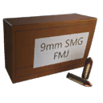
4 variants, 2 experimentalHP5, M/46 "Kpist" SMG, COM-10 SMG.32 ACP ammo
 4 variants, 2 experimental
4 variants, 2 experimentalMöller PP, Vosa vz.68.44 ammo
 4 variants, 2 experimental
4 variants, 2 experimental.44 Magnus, Iron Condor5.56mm ammo
 4 variants, 2 experimental
4 variants, 2 experimentalAutomatgevär 5, N16 Assault Rifle, Kvm 89 Squad Automatic Weapon7.62mm ammo
 4 variants, 2 experimental
4 variants, 2 experimentalAutomatgevär 4, AI-76 Assault Rifle, Kvm 59 Machine Gun +69x39mm ammo
AT-WAD Assault Rifle.243 ammo
 4 variants, 2 experimental
4 variants, 2 experimentalMeusser Hunting Rifle.270 ammo
 4 variants, 2 experimental
4 variants, 2 experimental"Älgstudsare" Hunting Rifle.50 BMG ammo
 4 variants, 2 experimental
4 variants, 2 experimentalPansarvärnsgevär 9012ga ammo
 5 variants, 2 experimental
5 variants, 2 experimental12G Pump-Action, Sjöqvist Semi-Auto, RACS-12 Semi-Auto ShotgunLauncher rounds
G79 Grenade Launcher, MGR-6 Grenade Launcher, Granatgevär m/49 +1Arrows
Resistance Heavy BowOther ammo
 3 variants
3 variantsResistance Flamethrower
What each calibre offers
The variants of each calibre by role. A Q6 mark means the round only works in experimental weapons.
| Calibre | All-round | Anti-armour | Anti-component | Support / effect / blast |
|---|---|---|---|---|
| 9mm Handgun | Full metal jacket Shock Q6 | Armour-piercing | HEAT Q6 | – |
| 9mm SMG | Full metal jacket Explosive Q6 | Armour-piercing Corrosive Q6 | – | – |
| .32 ACP | Full metal jacket | – | Hollow-point | Medical Q6 Radioactive Q6 |
| .44 | Full metal jacket Tar Q6 Explosive Q6 | – | Hollow-point | – |
| 5.56mm | Full metal jacket | Armour-piercing Corrosive Q6 | HEAT Q6 | – |
| 7.62mm | Full metal jacket Shock Q6 Tar Q6 | Armour-piercing | – | – |
| 9x39mm | Full metal jacket | Armour-piercing | – | – |
| .243 | Full metal jacket Explosive Q6 | – | Soft-point HEAT Q6 | – |
| .270 | Full metal jacket Shock Q6 | – | Soft-point | Medical Q6 |
| .50 BMG | Explosive Q6 | Armour-piercing | Full metal jacket | Medical Q6 |
| 12ga | Slug Buckshot Birdshot | Corrosive Q6 | – | Medical Q6 |
| Arrows | – | – | Arrow | Explosive (blast) Flare |
Choosing ammo
Machines in Generation Zero are built from two kinds of parts. Armour plates cover the body and have to be shot off before you can reach what is under them. Components are the working parts: weapons, optics, fuel tanks, engine drives and so on. Destroying components is what disarms and kills a machine (components you leave whole can be looted from the wreck afterwards, see the Mechanic skill). Every round has two multipliers that decide how much of its damage goes into each:
- Armour ×: damage to armour plates = projectile damage × this.
- Component ×: damage to components = projectile damage × this.
So the usual plan is: armour-piercing (or corrosive) to break the plates over the part you want, then a component round (hollow-point, soft-point or HEAT) into the part itself. Against small machines with thin armour and exposed parts (Runners, Seekers, Ticks) a component round is usually the better choice from the start. The Armor Damage and Component Damage skills add a further +5% / +10% on top.
The table lists every armour / component pair that appears in the game files and the calibres that have it. Green multipliers are better than standard, red ones worse. The special rounds (shock, tar, explosive, radioactive) keep ×1 / ×1: their value is the effect, not the multiplier.
| Ammo type | Armour × | Component × | Calibres | Best for |
|---|---|---|---|---|
| Full metal jacket | ×1 | ×1 | 9mm Handgun, 9mm SMG, .32 ACP, .44, 5.56mm, 7.62mm, 9x39mm, .243, .270 | All-round |
| Full metal jacket | ×1 | ×1.25 | .50 BMG | Components / weak spots |
| Armour-piercing | ×2 | ×0.75 | .50 BMG | Stripping armour plates |
| Armour-piercing | ×1.25 | ×0.75 | 9mm Handgun, 9mm SMG, 5.56mm, 7.62mm, 9x39mm | Stripping armour plates |
| Hollow-point | ×0.75 | ×1.25 | .32 ACP, .44 | Components / weak spots |
| Soft-point | ×0.75 | ×1.25 | .243, .270 | Components / weak spots |
| Slug | ×1 | ×1 | 12ga | All-round |
| Buckshot | ×1 | ×1 | 12ga | All-round |
| Birdshot | ×1 | ×1 | 12ga | All-round |
| Arrow | ×0.1 | ×1.5 | Arrows | Components / weak spots |
| Medical | ×1 | ×1 | .32 ACP, .270, .50 BMG, 12ga | Healing teammates (no damage) |
| Radioactive | ×1 | ×1 | .32 ACP | Effect only |
| Corrosive | ×1.5 | ×0.5 | 9mm SMG, 5.56mm, 12ga | Stripping armour plates |
| HEAT | ×0 | ×2 | 9mm Handgun, 5.56mm, .243 | Exposed components only (useless on armour) |
| Shock | ×1 | ×1 | 9mm Handgun, 7.62mm, .270 | All-round |
| Tar | ×1 | ×1 | .44, 7.62mm | All-round |
| Explosive | ×1 | ×1 | 9mm SMG, .44, .243, .50 BMG | All-round |
| Flare | ×0.1 | ×1 | Arrows | Effect only |
Where to find ammo
Ammo comes from:
- Ammo boxes. The map files have 13,420 ammo box spawn points; what a box holds is rolled at random (a crate spawn point: the game may not put a crate on every spot). Ammo boxes on the map
- Destroyed machines drop ammo when you loot their wrecks.
- Crafting. Ammo schematics are bought with Ammo Schematic Points: “Acquired by crafting ammo or found as loot when exploring the world.” The map files place 23 pickups that give them. Ammo schematic points The experimental rounds' schematics are bought with Experimental Schematic Points: “Acquired by completing Base Assault and Defense missions.” DLC ammo schematics are bought with DLC Schematic Points: “Acquired by crafting DLC items.”
- The Ammo Pack refills ammo; 4 of them are placed by hand in the world. Ammo Packs on the map
- The Salvage skill gives more ammo from every container and machine.
Ammo boxes by region
How many ammo box spawn points the map files have in each region, by box type. The Map links open the interactive map with only the ammo boxes of that region shown.
| Box | Archipelago | South Coast | Farmlands | Forest | Mountains | Marshlands | North Coast | Himfjäll | Total |
|---|---|---|---|---|---|---|---|---|---|
| Small ammo box | 1,099 | 1,586 | 1,380 | 1,526 | 1,421 | 692 | 1,171 | 1,210 | 10,085 |
| Large ammo box | 372 | 319 | 576 | 394 | 376 | 286 | 209 | 282 | 2,814 |
| Small rifle ammo box | 21 | 3 | 20 | 24 | 16 | 19 | – | 63 | 166 |
| Soviet small ammo box | – | – | 88 | – | – | 48 | 30 | – | 166 |
| Soviet large ammo box | – | – | 69 | – | – | 12 | 5 | – | 86 |
| Small shotgun ammo box | 6 | 5 | 7 | 6 | 5 | 6 | 5 | 5 | 45 |
| Large rifle ammo box | 1 | 3 | 3 | 2 | 1 | 3 | 5 | 1 | 19 |
| Small hunting rifle ammo box | 8 | 2 | 3 | – | 1 | 1 | 1 | – | 16 |
| FNIX large ammo box | – | – | – | – | 14 | – | – | – | 14 |
| Small magnum ammo box | – | 1 | – | – | 2 | – | – | 1 | 4 |
| Large explosives ammo box | – | – | – | 2 | 1 | – | – | – | 3 |
| Large sniper rifle ammo box | – | – | 1 | – | 1 | – | – | – | 2 |
| All ammo boxes | 1,507 | 1,919 | 2,147 | 1,954 | 1,838 | 1,067 | 1,426 | 1,562 | 13,420 |
| On the map | Map | Map | Map | Map | Map | Map | Map | Map | Map |
Tips from the numbers
- Armour-piercing puts ×1.25 into armour and ×0.75 into components. A plate that takes 5 FMJ hits takes 4 with AP; on a component AP costs you about 25% of your damage. Switch ammo once the plate is off.
- The .50 BMG rounds are special: AP has armour ×2 (the highest of any bullet) and even the FMJ has component ×1.25. With 100 base damage and falloff “none”, a Pansarvärnsgevär 90 with AP does 200 damage to armour per shot.
- The same 7.62mm round hits harder from some guns: its base damage is 33, but at Q5 it does S21 (52.8), Kotenok Sniper Rifle (46.2) per hit, because those weapons have higher quality multipliers. The 7.62mm page shows every weapon's numbers.
- The Kvm 89 Squad Automatic Weapon loses damage at Q6: its quality multiplier is ×1.1 at Q5 but ×1 for the Experimental Kvm 89, so 5.56mm Full Metal Jacket Ammo does 22 per bullet from a Q5 gun and 20 from the experimental one. Its own experimental tuning also changes the falloff from “drops to 60% by ~550 m” to “drops to 90% by ~1000 m”.
- Shotgun shells: buckshot fires 9 × 17 = 153 damage, birdshot 25 × 6 = 150, a slug 100. But pellets fall off fast (drops to 50% by ~35 m, 100 m max) while a slug keeps going (drops to 45% by ~300 m, 500 m max). Pellets up close, slugs past a few dozen metres.
- Launcher rounds by blast damage to machines: LG-7V High-Explosive Round 700 within 10 m; High-Explosive Dual-Purpose Round 580 within 12 m; Highly Corrosive Dual-Purpose Round 580 within 12 m; Grenade Launcher HE Cartridge 290 within 8 m. They stack only 4 per slot, so save them for the big machines.
- Medical rounds heal more the bigger the calibre: .32 ACP 5 within 3 m, .270 20 within 4 m, .50 BMG 40 within 5 m, 12ga 50 within 5 m.
- Running low? The Salvage skill gives +50% / +100% ammo from containers and destroyed machines, and the Ammo Pack refills you and your team.
All ammo60 items
One row per ammo item, grouped by calibre. Damage is the base damage of one projectile (pellet) at weapon multiplier 1.0, which is Q5 for most weapons (each calibre page has every weapon's own numbers per quality); shotgun shells show pellets × damage. vs armour / shot and vs comp. / shot multiply that by the pellets and the armour or component multiplier. For launcher rounds and explosive arrows the damage is the blast instead (damage to machines and its radius; for the arrow the weakest, undrawn stage), and the projectile columns are left empty because the projectile itself does no real damage. Weapons counts the weapons that can fire the round (for Q6-only rounds, the experimental versions). Typing in the filter opens the groups that match; click a header to sort.
9mm ammo (Handgun)4 items
Everything about these rounds is on the 9mm ammo (Handgun) page.
| Ammo | Type | Damage | Armour × | Comp. × | vs armour / shot | vs comp. / shot | Falloff | Range (m) | Stack | Weapons | |
|---|---|---|---|---|---|---|---|---|---|---|---|
| 9mm FMJ Ammo (Handgun) | Full metal jacket | 28 | ×1 | ×1 | 28 | 28 | drops to 50% by ~500 m | 1,000 | 120 | 4 | |
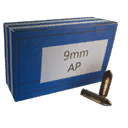 9mm Armor-Piercing Ammo (Handgun) | Armour-piercing | 28 | ×1.25 | ×0.75 | 35 | 21 | drops to 50% by ~500 m | 1,000 | 120 | 4 | |
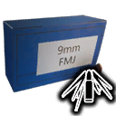 9mm Handgun HEAT Ammo | HEAT | 28 | ×0 | ×2 | 0 | 56 | drops to 50% by ~500 m | 1,000 | 120 | 2 | Q6 only |
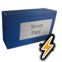 9mm Handgun Shock Ammo | Shock | 28 | ×1 | ×1 | 28 | 28 | drops to 50% by ~500 m | 1,000 | 120 | 2 | Q6 only |
9mm ammo (SMG)4 items
Everything about these rounds is on the 9mm ammo (SMG) page.
| Ammo | Type | Damage | Armour × | Comp. × | vs armour / shot | vs comp. / shot | Falloff | Range (m) | Stack | Weapons | |
|---|---|---|---|---|---|---|---|---|---|---|---|
| 9mm FMJ Ammo (SMG) | Full metal jacket | 24 | ×1 | ×1 | 24 | 24 | drops to 60% by ~500 m | 1,000 | 240 | 4 | |
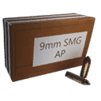 9mm Armor-Piercing Ammo (SMG) | Armour-piercing | 24 | ×1.25 | ×0.75 | 30 | 18 | drops to 60% by ~500 m | 1,000 | 240 | 4 | |
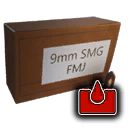 9mm SMG Corrosive Ammo | Corrosive | 24 | ×1.5 | ×0.5 | 36 | 12 | drops to 60% by ~500 m | 1,000 | 240 | 3 | Q6 only |
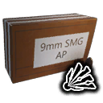 9mm SMG Explosive Ammo | Explosive | 24 | ×1 | ×1 | 24 | 24 | drops to 60% by ~500 m | 1,000 | 240 | 3 | Q6 only |
.32 ACP ammo4 items
Everything about these rounds is on the .32 ACP ammo page.
| Ammo | Type | Damage | Armour × | Comp. × | vs armour / shot | vs comp. / shot | Falloff | Range (m) | Stack | Weapons | |
|---|---|---|---|---|---|---|---|---|---|---|---|
| .32 ACP Full Metal Jacket Ammo | Full metal jacket | 25 | ×1 | ×1 | 25 | 25 | drops to 50% by ~500 m | 1,000 | 200 | 3 | |
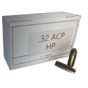 .32 ACP Hollow-Point Ammo | Hollow-point | 25 | ×0.75 | ×1.25 | 18.75 | 31.25 | drops to 50% by ~500 m | 1,000 | 200 | 3 | |
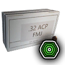 .32 ACP Medical Ammo | Medical | 0 | ×1 | ×1 | 0 | 0 | drops to 50% by ~500 m | 1,000 | 200 | 1 | Q6 only |
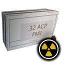 .32 ACP Radioactive Ammo | Radioactive | 0 | ×1 | ×1 | 0 | 0 | drops to 50% by ~500 m | 1,000 | 200 | 1 | Q6 only |
.44 ammo4 items
Everything about these rounds is on the .44 ammo page.
| Ammo | Type | Damage | Armour × | Comp. × | vs armour / shot | vs comp. / shot | Falloff | Range (m) | Stack | Weapons | |
|---|---|---|---|---|---|---|---|---|---|---|---|
| .44 Full Metal Jacket Ammo | Full metal jacket | 56 | ×1 | ×1 | 56 | 56 | drops to 60% by ~250 m | 500 | 60 | 3 | |
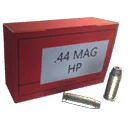 .44 Hollow-Point Ammo | Hollow-point | 56 | ×0.75 | ×1.25 | 42 | 70 | drops to 60% by ~250 m | 500 | 60 | 3 | |
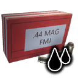 .44 Tar Ammo | Tar | 56 | ×1 | ×1 | 56 | 56 | drops to 60% by ~250 m | 500 | 60 | 2 | Q6 only |
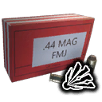 .44 Explosive Ammo | Explosive | 56 | ×1 | ×1 | 56 | 56 | drops to 60% by ~250 m | 500 | 60 | 2 | Q6 only |
5.56mm ammo4 items
Everything about these rounds is on the 5.56mm ammo page.
| Ammo | Type | Damage | Armour × | Comp. × | vs armour / shot | vs comp. / shot | Falloff | Range (m) | Stack | Weapons | |
|---|---|---|---|---|---|---|---|---|---|---|---|
| 5.56mm Full Metal Jacket Ammo | Full metal jacket | 20 | ×1 | ×1 | 20 | 20 | drops to 60% by ~550 m | 1,000 | 240 | 4 | |
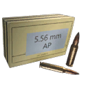 5.56mm Armor-Piercing Ammo | Armour-piercing | 20 | ×1.25 | ×0.75 | 25 | 15 | drops to 60% by ~550 m | 1,000 | 240 | 4 | |
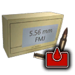 5.56mm Corrosive Ammo | Corrosive | 20 | ×1.5 | ×0.5 | 30 | 10 | drops to 60% by ~550 m | 1,000 | 240 | 2 | Q6 only |
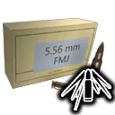 5.56mm HEAT Ammo | HEAT | 20 | ×0 | ×2 | 0 | 40 | drops to 60% by ~550 m | 1,000 | 240 | 2 | Q6 only |
7.62mm ammo4 items
Everything about these rounds is on the 7.62mm ammo page.
| Ammo | Type | Damage | Armour × | Comp. × | vs armour / shot | vs comp. / shot | Falloff | Range (m) | Stack | Weapons | |
|---|---|---|---|---|---|---|---|---|---|---|---|
| 7.62mm Full Metal Jacket Ammo | Full metal jacket | 33 | ×1 | ×1 | 33 | 33 | drops to 60% by ~550 m | 1,000 | 240 | 9 | |
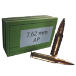 7.62mm Armor-Piercing Ammo | Armour-piercing | 33 | ×1.25 | ×0.75 | 41.25 | 24.75 | drops to 60% by ~550 m | 1,000 | 240 | 9 | |
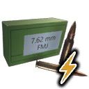 7.62mm Shock Ammo | Shock | 33 | ×1 | ×1 | 33 | 33 | drops to 60% by ~550 m | 1,000 | 240 | 3 | Q6 only |
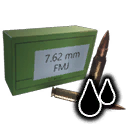 7.62mm Tar Ammo | Tar | 33 | ×1 | ×1 | 33 | 33 | drops to 60% by ~550 m | 1,000 | 240 | 3 | Q6 only |
9x39mm ammo2 items
Everything about these rounds is on the 9x39mm ammo page.
| Ammo | Type | Damage | Armour × | Comp. × | vs armour / shot | vs comp. / shot | Falloff | Range (m) | Stack | Weapons | |
|---|---|---|---|---|---|---|---|---|---|---|---|
| Full metal jacket | 27 | ×1 | ×1 | 27 | 27 | drops to 60% by ~550 m | 1,000 | 240 | 2 | ||
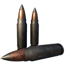 9x39mm Armor-Piercing Ammo | Armour-piercing | 27 | ×1.25 | ×0.75 | 33.75 | 20.25 | drops to 60% by ~550 m | 1,000 | 240 | 2 |
.243 ammo4 items
Everything about these rounds is on the .243 ammo page.
| Ammo | Type | Damage | Armour × | Comp. × | vs armour / shot | vs comp. / shot | Falloff | Range (m) | Stack | Weapons | |
|---|---|---|---|---|---|---|---|---|---|---|---|
| .243 Full Metal Jacket Ammo | Full metal jacket | 100 | ×1 | ×1 | 100 | 100 | drops to 35% by ~1000 m | 1,000 | 120 | 2 | |
 .243 Soft-Point Ammo .243 Soft-Point Ammo | Soft-point | 100 | ×0.75 | ×1.25 | 75 | 125 | drops to 35% by ~1000 m | 1,000 | 120 | 2 | |
 .243 HEAT Ammo .243 HEAT Ammo | HEAT | 100 | ×0 | ×2 | 0 | 200 | drops to 35% by ~1000 m | 1,000 | 120 | 2 | Q6 only |
 .243 Explosive Ammo .243 Explosive Ammo | Explosive | 100 | ×1 | ×1 | 100 | 100 | drops to 35% by ~1000 m | 1,000 | 120 | 2 | Q6 only |
.270 ammo4 items
Everything about these rounds is on the .270 ammo page.
| Ammo | Type | Damage | Armour × | Comp. × | vs armour / shot | vs comp. / shot | Falloff | Range (m) | Stack | Weapons | |
|---|---|---|---|---|---|---|---|---|---|---|---|
| .270 Full Metal Jacket Ammo | Full metal jacket | 100 | ×1 | ×1 | 100 | 100 | drops to 60% by ~1000 m | 1,000 | 120 | 2 | |
 .270 Soft-Point Ammo .270 Soft-Point Ammo | Soft-point | 100 | ×0.75 | ×1.25 | 75 | 125 | drops to 60% by ~1000 m | 1,000 | 120 | 2 | |
 .270 Medical Ammo .270 Medical Ammo | Medical | 0 | ×1 | ×1 | 0 | 0 | drops to 60% by ~1000 m | 1,000 | 120 | 2 | Q6 only |
 .270 Shock Ammo .270 Shock Ammo | Shock | 100 | ×1 | ×1 | 100 | 100 | drops to 60% by ~1000 m | 1,000 | 120 | 2 | Q6 only |
.50 BMG ammo4 items
Everything about these rounds is on the .50 BMG ammo page.
| Ammo | Type | Damage | Armour × | Comp. × | vs armour / shot | vs comp. / shot | Falloff | Range (m) | Stack | Weapons | |
|---|---|---|---|---|---|---|---|---|---|---|---|
| .50 BMG Full Metal Jacket Ammo | Full metal jacket | 100 | ×1 | ×1.25 | 100 | 125 | none | 1,000 | 40 | 2 | |
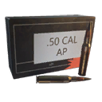 .50 BMG Armor-Piercing Ammo | Armour-piercing | 100 | ×2 | ×0.75 | 200 | 75 | none | 1,000 | 40 | 2 | |
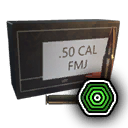 .50 BMG Medical Ammo | Medical | 0 | ×1 | ×1 | 0 | 0 | none | 1,000 | 40 | 2 | Q6 only |
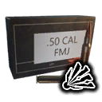 .50 BMG Explosive Ammo | Explosive | 100 | ×1 | ×1 | 100 | 100 | none | 1,000 | 40 | 2 | Q6 only |
12ga ammo5 items
Everything about these rounds is on the 12ga ammo page.
| Ammo | Type | Damage | Armour × | Comp. × | vs armour / shot | vs comp. / shot | Falloff | Range (m) | Stack | Weapons | |
|---|---|---|---|---|---|---|---|---|---|---|---|
| 12ga Slug Ammo | Slug | 100 | ×1 | ×1 | 100 | 100 | drops to 45% by ~300 m | 500 | 60 | 3 | |
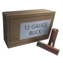 12ga Buckshot Ammo | Buckshot | 9 × 17 | ×1 | ×1 | 153 | 153 | drops to 50% by ~35 m | 100 | 60 | 3 | |
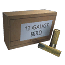 12ga Birdshot Ammo | Birdshot | 25 × 6 | ×1 | ×1 | 150 | 150 | drops to 50% by ~35 m | 100 | 60 | 3 | |
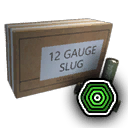 12ga Slug Medical Ammo | Medical | 0 | ×1 | ×1 | 0 | 0 | drops to 45% by ~300 m | 500 | 60 | 2 | Q6 only |
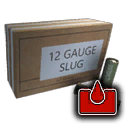 12ga Slug Corrosive Ammo | Corrosive | 100 | ×1.5 | ×0.5 | 150 | 50 | drops to 45% by ~300 m | 500 | 60 | 2 | Q6 only |
Launcher rounds11 items
Everything about these rounds is on the Launcher rounds page.
| Ammo | Type | Damage | Armour × | Comp. × | vs armour / shot | vs comp. / shot | Falloff | Range (m) | Stack | Weapons | |
|---|---|---|---|---|---|---|---|---|---|---|---|
| High-explosive | 290 blast · 8 m | – | – | – | – | none | 1,000 | 4 | 2 | ||
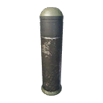 High-Explosive Dual-Purpose Round | High-explosive | 580 blast · 12 m | – | – | – | – | none | 1,000 | 4 | 1 | |
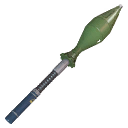 LG-7V High-Explosive Round | High-explosive | 700 blast · 10 m | – | – | – | – | none | 1,000 | 4 | 1 | |
| Electromagnetic Pulse Round | EMP | 15 blast · 15 m | – | – | – | – | none | 1,000 | 4 | 1 | |
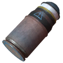 Grenade Launcher EMP Cartridge | EMP | 10 blast · 10 m | – | – | – | – | none | 1,000 | 4 | 2 | |
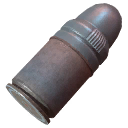 Grenade Launcher Smoke Cartridge | Smoke | – | – | – | – | – | none | 1,000 | 4 | 2 | |
| Smoke Round | Smoke | – | – | – | – | – | none | 1,000 | 4 | 1 | |
| Flare Round | Flare | – | – | – | – | – | – | – | 4 | 0 | |
| Chaff Round | Chaff | – | – | – | – | – | – | – | 4 | 0 | |
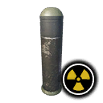 Highly-Radioactive Dual-Purpose Round | Radioactive | 0 blast · 7.5 m | – | – | – | – | none | 1,000 | 4 | 1 | Q6 only |
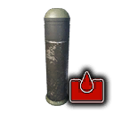 Highly Corrosive Dual-Purpose Round | Corrosive | 580 blast · 12 m | – | – | – | – | none | 1,000 | 4 | 1 | Q6 only |
Arrows3 items
Everything about these rounds is on the Arrows page.
| Ammo | Type | Damage | Armour × | Comp. × | vs armour / shot | vs comp. / shot | Falloff | Range (m) | Stack | Weapons | |
|---|---|---|---|---|---|---|---|---|---|---|---|
| Arrow | 60 | ×0.1 | ×1.5 | 6 | 90 | scales with draw: 50% undrawn to 100% fully drawn | 500 | 240 | 1 | ||
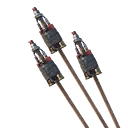 Resistance Explosive Arrows | Explosive | 200 blast · 2.5 m | – | – | – | – | drops to 45% by ~300 m | 500 | 240 | 1 | |
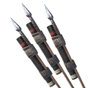 Resistance Flare Arrows | Flare | 1 | ×0.1 | ×1 | 0.1 | 1 | drops to 45% by ~300 m | 500 | 240 | 1 |
Other ammo3 items
Everything about these rounds is on the Other ammo page.
| Ammo | Type | Damage | Armour × | Comp. × | vs armour / shot | vs comp. / shot | Falloff | Range (m) | Stack | Weapons | |
|---|---|---|---|---|---|---|---|---|---|---|---|
| Flamethrower Napalm | Napalm | 0 | ×1 | ×1 | 0 | 0 | drops to 45% by ~8 m | 14 | 240 | 1 | |
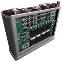 High Voltage Battery Mag | Battery | – | – | – | – | – | – | – | 40 | 1 | |
| Repair Juice | Repair | – | – | – | – | – | – | – | 120 | 0 |
How many hits?39 rounds
A worked example to compare rounds: the number of hits needed to break one part, using the base damage (weapon multiplier 1.0, Q5 for most weapons), before difficulty scaling, with no skills and no augments. Shotgun rows count whole shells with every pellet hitting. The part health comes from the machines' layout files (first layout of each machine). Treat it as a comparison, not an exact promise: weak-spot bonuses, falloff, difficulty and co-op scaling all change the real count.
Armour / Comp.: damage per shot against armour / components. The other columns are hits to break that part: Hunter hull: Hunter (Military) hull, armour, 32.1 hp; Hunter fuel tank: Hunter (Military) fuel tank, component, 60 hp; Harvester plate: Harvester (Military) plate, armour, 119.1 hp; Tank fuel tank: Tank (Military) fuel tank, component, 450 hp.